Solution pre/post-clonage avec NewSID
Introduction
Lorsque l'on clone des postes NT/2K/XP, il faut corriger quelques bricoles sur chaque poste pour assurer un bon fonctionnement en réseau.
Si vos postes n'utilisent pas une attribution IP par DHCP, ils ont la même IP lors du premier boot et cela provoque des erreurs.
Ils ont aussi le même nom de machine.
Sur les postes XP, ils ont aussi le même SID (un identifiant de la machine,...).
Il faut corriger cela pour des questions de sécurité dans le cadre d'une utilisation hors domaine.
Dans le cas d'une utilisation au sein d'un domaine, j'ignore si cela pose un problème.
Pour les postes XP, vous pouvez utiliser l'outil Micro$oft SYSPREP pour corriger le nom de machine et le SID lors du premier boot après clonage.
L'inconvénient de cet outil, c'est qu'il nécessite l'utilisation d'une clé VLK(?), sans quoi, une fois les machines clonées, il faut saisir sur chaque clone une clé valide (qui corresponde au type d'installation XP pro (toutes les clés ne sont pas interchangeables)).
Bref, le risque de galère n'est pas négligeable.
Il est également possible d'utiliser l'outil NewSID de SysInternals.
Voir http://www.sysinternals.com
Cet outil permet également de changer le nom de machine et le SID, mais sans se soucier d'histoires de clés.C'est une solution avec NewSID que j'uilise désormais et que je vais présenter ci-dessous.
Pour ce qui est du changement IP,... si vous n'utilisez pas de serveur DHCP, il est possible d'utiliser la commande 'netsh' dans un script pour modifier les paramètres IP après clonage.
Pour récapituler, j'utilise:
La commande 'netsh' dans un script BATCH pour les changements IP,...
Le programme NewSID de SysInternals (voir la rubrique liens) pour le changement de nom et de SID.
Auto-it (voir la rubrique liens) pour lier le tout et pour les boites de dialogue.
NOTE: A propos de SID...
Le SID est un identifiant propre à chaque machine dans un réseau Micro$oft.
Qui dit identifiant dit unicité.
Deux machines ne doivent pas avoir le même SID sans quoi on n'a plus vraiment affaire à un identifiant.L'identifiant d'un utilisateur se construit avec quelques caractères supplémentaires: un RID
Chaque utilisateur a donc un identifiant du type: SID+RID
(Ce n'est pas une somme numérique, mais une concaténation)Dans un réseau Micro$oft, les stations ont un SID, le serveur a un SID et le domaine a un SID.
Le SID du domaine permet à une station qui a joint le domaine de savoir si elle s'adresse bien au bon serveur lors de ses contacts ultérieurs (si j'ai bien tout compris;o).
Le changement de nom de la station ne modifie pas son SID.
Or deux utilisateurs distincts créés sur deux clones risquent d'avoir le même identifiant (SID+RID) et ainsi obtenir des droits sur les fichiers, ressources,... de l'autre dans une situation Workgroup (hors domaine Micro$oft/Samba).
Cela pose un problème de sécurité sur des partages et sur des supports amovibles formatés en NTFS (si j'ai bien tout compris;o).Dans un domaine, pour ce qui est des identifiants de comptes utilisateurs, ils ne dépendent pas du SID de la machine, mais du SID du domaine (SID du serveur).
L'identifiant d'un utilisateur défini sur le domaine est de la forme SID_du_domaine+RID
Démarche
Le principe est le suivant:
On met en place avant le clonage tout le nécessaire sur le poste "modèle".
Après clonage, en vous connectant en administrateur local, une boite de dialogue s'ouvre pour vous inviter à saisir la nouvelle IP et le nouveau nom de machine.
Après validation, des scripts se lancent et amènent la station à rebooter.
Lors du login administrateur suivant, le nettoyage est fait pour supprimer ce qui a servi au post-clonage.
NOTE:
Le dispositif permet si nécessaire d'intégrer dans la foulée un domaine SambaEdu3.
Dans ce cas, on fournit quelques paramètres supplémentaires avant clonage.
Et après clonage, il faut compter un reboot de plus puisque le rejoin_se3_XP.vbs se lance là où se termine habituellement l'opération hors situation SE3 (le lancement est automatisé; seul le login administrateur est nécessaire).
Sans domaine SambaEdu3
Dans un premier temps, je vais présenter la mise en place du paquet avant clonage dans le cas où l'on ne souhaite pas intégrer un domaine SambaEdu3 dans la foulée.
La mise en place
Il s'agit de désarchiver le paquet fourni (voir plus bas) dans un dossier quelconque et de lancer le 'setup.exe' qui s'y trouve.
Dans le cas où vous avez un logiciel comme PowerArchiver installé, en double-cliquant sur l'archive, le programme vous propose de lancer le 'setup.exe'.L'archive contient les fichiers suivants:
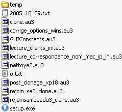
Les fichiers .au3 sont les fichiers source AutoIt (inutiles si vous ne souhaitez pas modifier/améliorer le dispositif).
Le dossier 'temp' contient l'ensemble du dispositif mis en oeuvre par le 'setup.exe'.
Au lancement de 'setup.exe', la première fenêtre vous invite à définir les paramètres IP communs aux stations qui vont être clonées:
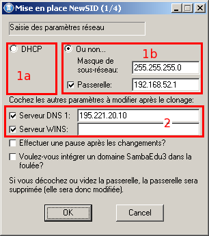A ce stade, vous pouvez opter pour une configuration en client DHCP (1a) ou en configuration statique (1b).
Dans le cas de la configuration statique, vous devez préciser à la fois le masque et la passerelle (vider si il n'y a pas de passerelle), mais ne décochez pas la passerelle sans quoi l'adresse IP ne serait pas modifiée (la commande netsh ne permet pas de modifier l'IP sans modifier/saisir la passerelle associée).Indépendamment de ces choix, vous pouvez aussi modifier (2) le serveur DNS et le serveur WINS (je n'ai prévu qu'un seul serveur de chaque (cela pourra être aisément modifié dans le futur)).
Si vous décochez, les paramètres DNS et WINS ne sont pas modifiés.
Si vous cochez et videz le champ, le DNS ou WINS est supprimé.Vous pouvez ensuite effectuer une pause après l'affichage de la config IP obtenue (cela implique de l'utilisateur une validation supplémentaire; ce n'était utile que pour du débuggage...).
Vous pouvez aussi choisir d'intégrer un domaine SambaEdu3 dans la foulée.
Je laisse ce choix de côté pour un autre paragraphe.
NOTE:
Dans le cas où vous avez préparé un poste (sans DHCP) avec les bons paramètres IP, ne renseignez que le masque de sous-réseau, la passerelle et laissez cochée la passerelle.
Laissez décochés les champs DNS et WINS.
Après validation de cette fenêtre, une partie de l'arborescence est mise en place.
Une fenêtre DOS s'affiche brièvement pour appliquer des ACL sur le dossier 'C:\temp\clone' et éviter ainsi qu'un utilisateur non administrateur aille y fouiner.
Il vous est ensuite proposé de mettre en place un fichier de correspondances de nom de machine, adresse MAC, IP et Workgroup.
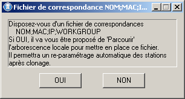
Si vous répondez Oui, une boite d'Exploration s'ouvre pour aller chercher le fichier.L'identifiant du poste est l'adresse MAC de la carte réseau.
Si un tel fichier est mis en place, après le clonage, le renommage, changement IP,... seront effectués automatiquement sans saisie de l'administrateur.
Si un tel fichier n'est pas proposé, vous serez invité à saisir le nom, l'IP et le Workgroup souhaité lors du redémarrage après clonage.Chaque ligne du fichier (si vous en proposez un) contient les informations suivantes avec le formatage suivant:
NOM_DE_MACHINE;ADRESSE_MAC;ADRESSE_IP;WORKGROUPVoici un exemple de fichier:
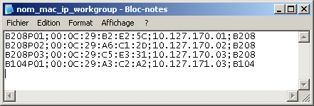
A noter: Le séparateur des champs est le point-virgule.
Et le séparateur dans l'adresse MAC est ":".
Pour la suite, je ne vais pas mettre en place un tel fichier.
La troisième partie de la mise en place débute:
Il s'agit de placer l'exécutable 'clone.exe' dans le dossier 'C:\Documents and Settings\XXXXX\Menu démarrer\Programmes\Démarrage\' d'un administrateur de la machine.
C'est le compte avec lequel vous devrez vous connecter sur chaque station clonée pour que les corrections IP, nom de machine et SID soient lancées.La fenêtre suivante s'affiche:
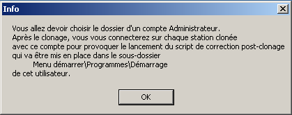
Elle fournit à peu près les mêmes informations que celles que je viens de proposer.
Validez.
Dans la fenêtre suivante, choisissez un compte administrateur:
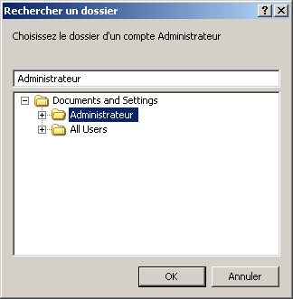
Sur cet exemple, je n'ai qu'un compte défini.
Il a le statut d'administrateur (ça ne se voit pas sur cet écran).
Et il se nomme 'Administrateur'.Après la sélection, validez.
La fenêtre de confirmation s'affiche:
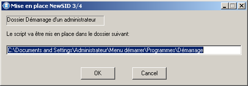
Après validation, une dernière fenêtre vous indique que tout est en place:
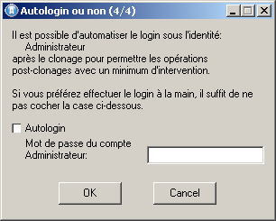
Pour éviter de devoir vous connecter sur chaque station après clonage, vous pouvez mettre en place un Auto-login (il s'agit d'une petite modification dans la base de registre):
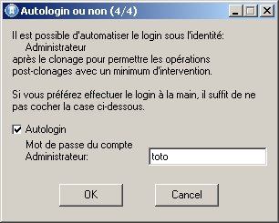
Cet auto-login sera automatiquement supprimé une fois la tâche de post-clonage effectuée.
Lors du Clic sur OK, vous obtenez le message suivant:
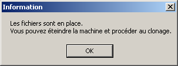
Vous pouvez dès lors éteindre la machine et procéder au clonage.
NOTE:
Les fichiers mis en place le sont:
Dans 'C:\temp\':
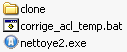
Les fichiers à la racine de ce dossier sont ceux qui serviront au nettoyage.Dans le sous-dossier 'C:\temp\clone\', on trouve les paramètres, les BATCH et programmes:
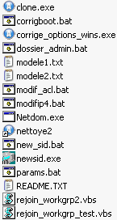 Préciser l'utilité de chacun des fichiers...
Dans 'C:\Documents and Settings\XXXXX\Menu démarrer\Programmes\Démarrage\', le programme 'clone.exe' qui sera exécuté au login correspondant après clonage sur chaque station (modèle compris (pour le modèle, après clonage, vous pourrez annuler les modifs et procéder au nettoyage en lançant directement le programme 'C:\temp\nettoyage2.exe')).
Le clonage
Procédez au clonage des stations d'après le modèle à l'aide de l'outil de votre choix.
Pour ma part j'utilise généralement UdpCast.
Voir http://www.udpcast.linux.lu/
Après clonage
Après clonage, sur chaque station, connectez-vous sous l'identité de l'utilisateur administrateur dans le 'Menu démarrer\Programmes\Démarrage\' duquel le 'clone.exe' a été mis en place (sauf si vous avez mis en place l'autologon).
Dans cet exemple, il s'agissait de l'utilisateur 'Administrateur':
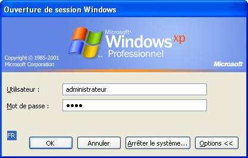
En fin de login, une fenêtre s'ouvre (il faut parfois un peu de temps pour que W$ ait fini de charger tout ce qui se met en tray-icon,...).
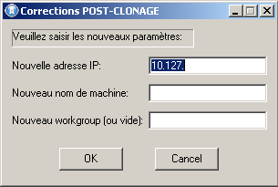
Saisissez l'IP, le nom et le Workgroup souhaité:
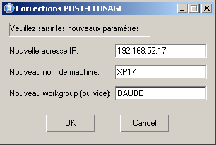
Le nom ne doit comporter que des caractères alphanumériques (et éventuellement le caractère '_').Validez.
C'est tout ce que vous aurez à faire sur chaque clone.NOTE: Si le nom du Workgroup est laissé vide, il n'est pas modifié.
Un premier BATCH se lance ('corrigboot.bat') pour ramener le délai dans le 'boot.ini' à zéro.
Ce fichier est une scorie de mes premiers essais avec Sysprep qui avait aussi l'inconvénient de remettre un délai avant de démarrer XP.
Il s'exécute très rapidement et c'est une correction qui me convient; je l'ai donc conservé.
Un deuxième BATCH se lance ('modifip4.bat') pour procéder au changement d'IP,... et aux autres modifications éventuelles sur l'interface réseau:
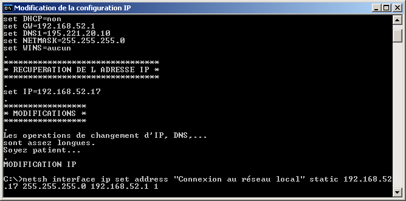
L'opération de changement IP,... est assez longue.
Cependant, si vous clonez plusieurs machines, pendant que l'opération se fait, vous pouvez vous occuper d'un autre clone.
Sans que vous ayez quoi que ce soit à faire, un troisième et dernier BATCH se lance ('new_sid.bat') pour procéder au changement de workgroup, de nom de machine et de SID:
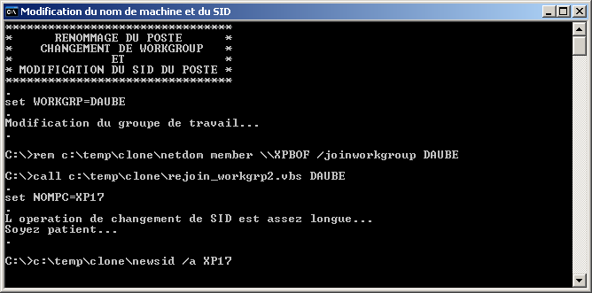
L'opération est assez longue.
Lorsqu'elle se termine, la machine reboote automatiquement.
NOTE:
Il est recommandé de se connecter à nouveau une fois avec le même compte administrateur pour que le nettoyage soit effectué.
Il n'est cependant pas indispensable en mode hors SambaEdu3.Si vous aviez spécifié un fichier de correspondances NOM;MAC;IP;WORKGROUP, la saisie des informations ne s'affiche pas.
En revanche, une fenêtre affiche quelques secondes les paramètres qui vont être appliqués:
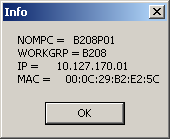
Puis les modifications s'exécutent sans intervention.
Avec un domaine SambaEdu3
Dans le cas où vous souhaitez intégrer un domaine SambaEdu3, j'ai prévu un dispositif qui mérite quelques explications.
Je vais me contenter ici d'indiquer ce qui diffère de la situation précédente.
La mise en place
Comme dans la situation hors domaine SambaEdu3, il s'agit de lancer le 'setup.exe' après avoir extrait l'archive.
Voici la situation initiale:
On clone des machines d'après un modèle qui n'est pas dans le domaine SAMBAEDU3 (quitte à la sortir du domaine auparavant).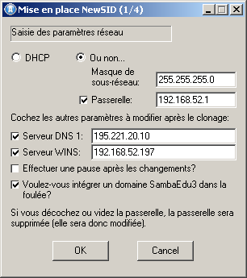
Les paramètres sont définis et j'ai coché la case qui-va-bien pour intégrer un domaine SambaEdu3 dans la foulée.
Ici aussi, l'étape suivante est celle de la mise en place d'un fichier de correspondances de nom de machine, adresse MAC, IP et Workgroup (voir plus haut).
NOTE: Si les correspondances indiquées pour le nom et l'adresse MAC sont en contradiction avec le contenu du fichier 'clients.ini' de SambaEdu3, c'est le contenu de ce dernier fichier qui 'emportera (les modifications propres à SambaEdu3 sont effectuées en dernier).
La fenêtre suivante s'ouvre:
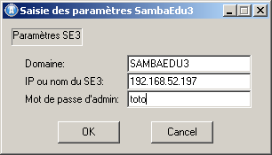
Les deux premiers champs sont remplis automatiquement (domaine par défaut et IP du serveur WINS).
Il reste à préciser le mot de passe à l'abri des regards indiscrets.Après validation, des fichiers sont générés pour accéder à des partages en tant qu'utilisateur 'admin' de SambaEdu3.
Le mot de passe y est en clair.
C'est donc une faille de sécurité exploitable de diverses façons (voir plus bas).
Après validation, un premier BATCH se lance pour récupérer le fichier 'clients.ini' s'il existe.
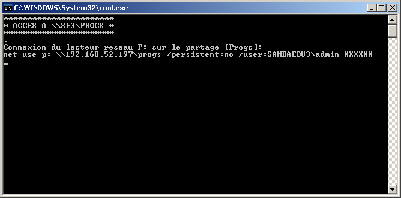Ce fichier se trouve dans le partage [Progs] dans le dossier 'install\installdll\'.
Il contient les correspondances nom de machine/adresse MAC de la carte réseau.
Si lors de l'intégration à l'aide du rejoin_se3_XP.vbs l'adresse MAC de la la station est trouvée dans ce fichier, le nom de machine est automatiquement récupéré du 'clients.ini'.Il convient donc de faire en sorte que l'accès ci-dessus soit un succès.
Si par exemple la config réseau actuelle est incompatible avec l'accès au partage, le fichier ne sera pas récupéré.
Ce n'est pas dramatique, mais lors du post-clonage, vous vous verrez proposer un champ 'Nom de machine' dont il ne sera pas tenu compte si la machine avait déjà rejoint le domaine lors d'un usage précédent.
C'est le nom inscrit dans le 'clients.ini' situé dans le partage qui sera finalement imposé (c'est le fonctionnement normal du 'rejoin_se3_XP.vbs').Lors de cette opération, une version modifiée du 'rejoin_se3_XP.vbs' est également mise en place pour éviter que le VBS vous demande de confirmer.
Le script se nomme alors 'rejoin_se3_XP_clone.vbs'.
La modification consiste à commenter deux boites de dialogue et à imposer le nom de machine courant comme nom à utiliser si la machine n'était pas déjà dans le 'clients.ini'.
Si la mise en place de ce script échoue, la mise en place est tentée à nouveau après le clonage.
Dans le pire des cas, c'est le 'rejoin_se3_XP.vbs' qui se lance et vous aurez une ou deux boites de dialogues en plus à valider.
Dans le cas où l'on souhaite intégrer un domaine SambaEdu3, il est donc préférable de disposer d'une config IP qui permette d'accéder dès à présent au serveur SambaEdu3.
Cela n'a pas d'importance dans le cas où on ne souhaite pas intégrer un domaine SambaEdu3.
Si l'accès précédent a réussi, un deuxième BATCH est lancé pour mettre en place sur le Bureau de l'utilisateur 'admin' de SambaEdu3 un raccourci vers le programme de nettoyage.
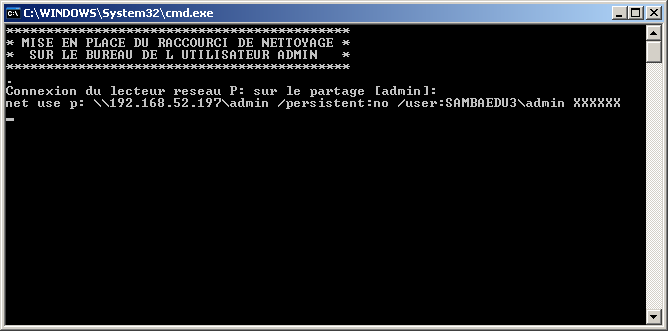
Si l'accès est un échec, la mise en place sera tentée à nouveau sur chaque station clonée après la reconfiguration IP.
Contrairement à la situation hors domaine SambaEdu3, il est très important d'effectuer le nettoyage sur les machines pour des questions de sécurité (voir plus bas).
Si pour une raison ou une autre, le raccourci ne peut pas être mis en place, il est toujours possible (et même recommandé) de lancer le 'C:\temp\nettoye2.exe' (ou de se connecter avec le compte administrateur local dont le 'Menu démarrer\Programmes\Démarrage\' contiendra le 'clone.exe')
Je ne détaille pas davantage la suite des opérations.
La fenêtre de choix du compte administrateur local s'ouvre.
Voir ci-dessus pour la fin de la mise en place.
Les fichiers mis en place dans 'C:\temp\clone\' sont un peu plus nombreux que lorsqu'on n'intègre pas un domaine SambaEdu3 dans la foulée:
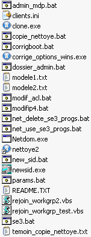
Préciser l'utilité de chacun des fichiers...
Le mot de passe de l'utilisateur 'admin' de SambaEdu3 est en clair dans plusieurs fichiers de 'C:\temp\clone\'.
Des ACL sont mises en place sur ce dossier pour éviter qu'un utilisateur non-administrateur de la machine aille y fouiner.
Ces ACL n'ont d'effet que si votre partition système est formatée en NTFS et non en FAT32.Même si aucun intrus ne dispose du mot de passe d'un compte administrateur de la machine, il est possible d'accéder à ce dossier de diverses façons.
Il est notamment possible d'utiliser la mini-distribution Linux 'Offline NT Password and Recovery Kit' pour vider le mot de passe d'un compte administrateur et ainsi ensuite se connecter en administrateur pour aller lire le mot de passe.
Il est aussi possible d'accéder aux fichiers directement depuis une distribution Live Linux ou autre en montant la partition NTFS...Il est même possible à un utilisateur de se mettre en client de votre programme de clonage pour cloner une machine de plus sur laquelle il pourra trafiquer sans que vous le voyez (si vous clonez beaucoup de machines, un client de plus passera sûrement inaperçu).
Enfin, et sans prétendre à l'exhaustivité, un utilisateur peut sniffer le réseau pendant les accès 'admin' pour récupérer le mot de passe (mais cela reste vrai en dehors de la situation de post-clonage).
Le clonage
Procédez au clonage des stations d'après le modèle à l'aide de l'outil de votre choix.
Pour ma part j'utilise généralement UdpCast.
Voir http://www.udpcast.linux.lu/
Après clonage
Après le clonage, vous vous connectez avec le compte administrateur local choisi précédemment sur chacune des stations clonées (sauf si vous avez mis en place l'autologon).
Si un fichier de correspondances NOM;MAC;IP;WORKGROUP a été mis en place, il s'affiche:
Sinon, il y a deux situations (dans les captures ci-dessous, les classes IP e sont pas les mêmes (le serveur SambaEdu3 de test n'était pas le même)):
Si le fichier 'clients.ini' a été récupéré et si l'adresse MAC de la station courante s'y trouvait, un des deux champs sera rempli automatiquement et non modifiable:
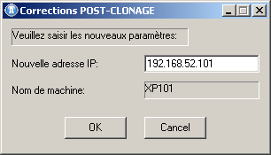Si la machine n'était pas dans le 'clients.ini', ou si la récupération du 'clients.ini' a échoué, vous obtenez une boite de dialogue avec deux champs à remplir:
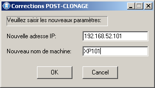NOTE: Si le 'clients.ini' n'a pas pu être récupéré et qu'il contient l'adresse MAC correspondant à la machine, la saisie du nom de machine sera outrepassée par le script 'rejoin_se3_XP'
(en fait le nom de machine est modifié une première fois par le script 'newsid.bat' et une deuxième fois par le script 'rejoin_se3_XP.vbs').
C'est tout ce que vous avez à faire jusqu'à ce que la station ait rebooté.
Passez à une autre station.Voici ce qui se produit:
Après validation, un premier BATCH ('corrigboot.bat') corrigeant éventuellement le 'boot.ini' est lancé.
Un deuxième BATCH est lancé ('modifip4.bat') pour procéder aux modifications IP,...
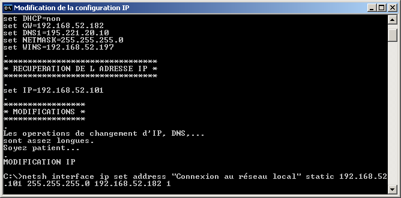
Un deuxième BATCH ('new_sid.bat') se lance ensuite pour effectuer le changement de nom de machine et de SID:
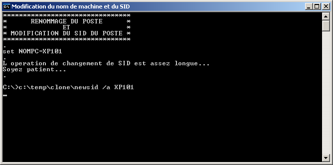
Lorsque l'opération se termine, la machine reboote.
Après le reboot, il faut à nouveau se connecter avec le compte administrateur local pour procéder à l'intégration du domaine (sauf si vous avez mis en place l'autologon).
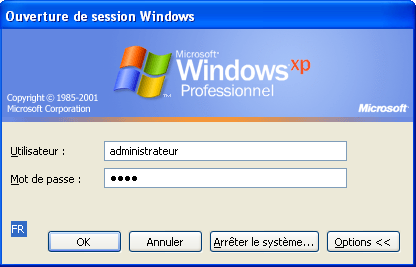
Une fois connecté, vous pouvez passer à une autre machine.
Le script d'intégration du domaine va se lancer automatiquement.Un lecteur réseau pointant vers le partage [Progs] est créé.
Le script 'rejoin_se3_XP_clone.vbs' situé dans le dossier 'install/installdll/' est ensuite lancé:
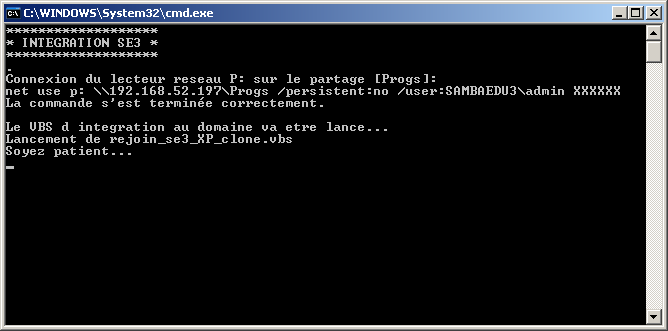
NOTE: A ce stade, le(s) fichier(s) contenant le mot de passe de l'utilisateur 'admin' de SambaEdu3 est supprimé (les opérations restantes ne nécessitent plus ce mot de passe) et la corbeille est vidée.
L'autologon est également supprimé s'il avait été mis en place.
Le VBS se lance:
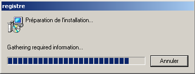
Window$ finit par se refermer:
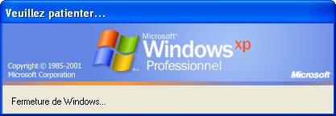
A partir de là, c'est le fonctionnement classique du 'rejoin_se3_XP.vbs':
La machine va rebooter deux fois pour effectuer toute la mise en place (jonction au domaine, création d'adminse3, mise en place de la DLL,ajout de l'utilisateur 'admin' à la liste des administrateurs locaux,...)Une fois les deux reboot effectués, vous vous connectez en utilisateur 'admin' de SambaEdu3:
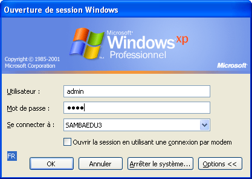
Une fois connecté, pour des questions de sécurité (voir plus haut), effectuez le nettoyage:
Scorie
En fin d'opération, ne subsiste sur chaque station que le fichier 'C:\temp\nettoye2.exe'.
Vous pouvez le supprimer manuellement, ou le laisser (ce n'est pas très gênant).
La commande NETSH
La commande 'netsh' est ici utilisée pour les changements IP,...
Voici l'aide pour les Commandes Netsh pour l'interface IP
Cette commande permet bien d'autres opérations encore.
De façon générale, vous pouvez accéder à l'Aide de la ligne de commande WinXP par la commande:
%windir%\hh.exe ms-its:%windir%\Help\ntcmds.chm::/ntcmds.htm
Pour plus de commodité, voici un BATCH permettant de lancer l'aide: aide_cmd.bat
Licences
Pour ce qui concerne les licences, se reporter à celles de NewSID et d'AutoIt (voir la rubrique liens).
Quant à mes scripts BATCH et .AU3, ils sont librement modifiables, diffusables,...
Téléchargement
Voici le paquet présenté dans cette page: paquet_post-clonage_20051008.zip
Et la version corrigée pour tenir compte de la mise à jour du 09/11/2005 du 'rejoin_se3_XP.vbs': paquet_post-clonage_20051119.zip
Et une nouvelle version avec des fonctions en plus: paquet_post-clonage_20061101.zip (voir le changelog)
Et une nouvelle version avec encore des fonctions en plus: paquet_post-clonage_20061129.zip (voir le changelog)
Et une nouvelle version permettant de ne pas mettre en place d'ACL sur C:\temp\clone si jamais cela pose un problème: paquet_post-clonage_20070131.zip (voir le changelog)
Et encore une nouvelle version plus souple sur le format de l'adresse MAC dans le fichier de correspondances NOM;MAC;IP;WORKGROUP: paquet_post-clonage_20070201.zip (voir le changelog)
Correction d'un bug sur le mode DHCP: paquet_post-clonage_20070323.zip (voir le changelog)
Ajout de fonctionnalité: paquet_post-clonage_20070326.zip (voir le changelog)
Ajout de la prise en compte de se3-wpkg: paquet_post-clonage_20070616.zip (voir le changelog)
Amélioration de la prise en compte de se3-wpkg: paquet_post-clonage_20080120.zip (voir le changelog)
Possibilité de fournir un fichier de correspondance NOM;MAC;IP;WORKGROUP avec IP=DHCP.
Correction d'un bug sur le renommage du poste en mode client DHCP: paquet_post-clonage_20080714.zip (voir le changelog)
A FAIRE
Remettre tout ça au propre et faire un changelog...
Voici une amorce de Changelog.
Permettre de personnaliser les IP proposées lors de la mise en place et dans la fenêtre de saisie de l'IP (par défaut, on se voit proposer du 10.127.xxx.xxx).
Liens
NewSID: http://www.sysinternals.com
AutoIt: http://www.autoitscript.com/autoit3/docs/index.html